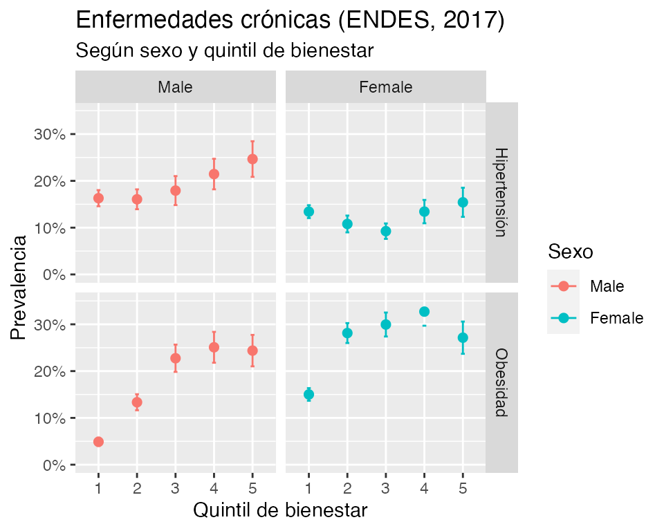

endes-howto.Rmd
library(ENDES.PE)
diccionario_encuesta(salud)
#> # A tibble: 263 × 4
#> variable class label levels
#> <chr> <named list> <chr> <named l>
#> 1 QHCLUSTER <chr [1]> Conglomerado <chr [3,…
#> 2 QHNUMBER <chr [1]> Vivienda seleccionada <chr [25…
#> 3 QHHOME <chr [1]> Hogar seleccionado <chr [5]>
#> 4 QSNUMERO <chr [1]> Número de la persona seleccionada <chr [15…
#> 5 QSINTD <chr [1]> Dia de visita final <chr [31…
#> 6 QSINTM <chr [1]> Mes de visita final <chr [10…
#> 7 QSINTY <chr [1]> Año de visita final <chr [1]>
#> 8 QSEQUIPO <chr [1]> Codigo equipo <chr [63…
#> 9 QSENTREV <chr [1]> Codigo entrevistadora <chr [36…
#> 10 QSTOTVISIT <chr [1]> Numero total de visitas <chr [9]>
#> 11 QSRESULT <chr [1]> Codigo resultado final <chr [6]>
#> 12 QSRESULTX <chr [1]> Otro resultado <chr [1]>
#> 13 QSNINOS <chr [1]> Total Niños/Niñas de 0 a 11 años <chr [1]>
#> 14 QSRESINF <chr [1]> Resultado informante <chr [7]>
#> 15 QSORDNIN1 <chr [1]> Primera niña o niño <chr [1]>
#> 16 QSRESNIN1 <chr [1]> Resultado niña(o)1 <chr [1]>
#> 17 QSORDNIN2 <chr [1]> Seguna niña o niño <chr [0]>
#> 18 QSRESNIN2 <chr [1]> Resultado niña(o) 2 <chr [0]>
#> 19 QSORDNIN3 <chr [1]> Tercera niña o niño <chr [0]>
#> 20 QSRESNIN3 <chr [1]> Resultado niña(o) 3 <chr [0]>
#> 21 QSORDNIN4 <chr [1]> Cuarta niña o niño <chr [0]>
#> 22 QSRESNIN4 <chr [1]> Resultado niña(o) 4 <chr [0]>
#> 23 QSORDNIN5 <chr [1]> Quinto niño o niña <chr [0]>
#> 24 QSRESNIN5 <chr [1]> Resultado niña(o) 5 <chr [0]>
#> 25 QSORDNIN6 <chr [1]> Sexto niño o niña <chr [0]>
#> 26 QSRESNIN6 <chr [1]> Resultado niña(o) 6 <chr [0]>
#> 27 QSORDNIN7 <chr [1]> Sétimo niño o niña <chr [0]>
#> 28 QSRESNIN7 <chr [1]> Resultado niña(o) 7 <chr [0]>
#> 29 QSORDNIN8 <chr [1]> Octavo niño o niña <chr [0]>
#> 30 QSRESNIN8 <chr [1]> Resultado niña(o) 8 <chr [0]>
#> 31 QSORDNIN9 <chr [1]> Noveno niño o niña <chr [0]>
#> 32 QSRESNIN9 <chr [1]> Resultado niña(o) 9 <chr [0]>
#> 33 QSORDNIND <chr [1]> Decimo niño o niña <chr [0]>
#> 34 QSRESNIND <chr [1]> Resultado niña(o) 10 <chr [0]>
#> 35 CONTROL_S <chr [1]> Diligenciar Salud <chr [0]>
#> 36 QS20C <chr [1]> Codigo persona seleccionada <chr [15…
#> 37 QSSEXO <chr [1]> Sexo de la persona seleccionada <chr [2]>
#> 38 QS21AH <chr [1]> Hora de inicio de entrevista <chr [24…
#> 39 QS21AM <chr [1]> Minuto de inicio de entrevista <chr [60…
#> 40 QSMEF <chr [1]> Informante en Mef <chr [2]>
#> 41 QSDIA <chr [1]> dia de nacimiento <chr [31…
#> 42 QS22M <chr [1]> Mes de nacimiento <chr [12…
#> 43 QS22A <chr [1]> Año de nacimiento <chr [85…
#> 44 QS23 <chr [1]> Años cumplidos <chr [83…
#> 45 QS24 <chr [1]> Asistio a la escuela <chr [2]>
#> 46 QS25N <chr [1]> Nivel que aprobo <chr [6]>
#> 47 QS25AG <chr [1]> Grado o año <chr [2]>
#> 48 QS25A <chr [1]> Año de estudios <chr [7]>
#> 49 QS25G <chr [1]> Grado de estudios <chr [6]>
#> 50 QS25AA <chr [1]> ¿Cuál es el idioma o lengua materna que … <chr [12…
#> 51 QS25AAX <chr [1]> Especifique <chr [37…
#> 52 QS25BB <chr [1]> Por sus antepasados y de acuerdo a sus c… <chr [9]>
#> 53 QS25BBX <chr [1]> Especifique <chr [13…
#> 54 QS26 <chr [1]> Tiene seguro de salud <chr [2]>
#> 55 QS27 <chr [1]> Institucion a que corresponde el seguro … <chr [14…
#> 56 QS27X <chr [1]> Otra institucion <chr [3]>
#> 57 QS28 <chr [1]> Pregunta 489 C. Individual <chr [2]>
#> 58 QS29A <chr [1]> Pregunta 801a <chr [2]>
#> 59 QS29B <chr [1]> Pregunta 801b <chr [2]>
#> 60 QS100 <chr [1]> Algun profesional le ha medido la Presio… <chr [3]>
#> 61 QS101 <chr [1]> Donde le midieron la Presion Arterial <chr [14…
#> 62 QS101CX <chr [1]> Otras campañas donde le midieron la pres… <chr [1]>
#> 63 QS101X <chr [1]> Otros donde le midieron la presion arter… <chr [18…
#> 64 QS102 <chr [1]> Le diagnosticaron Hipertension Arterial … <chr [3]>
#> 65 QS103U <chr [1]> Unidad de tiempo que le diagnosticaron H… <chr [3]>
#> 66 QS103C <chr [1]> Años/meses que diagnosticaron Hipertensi… <chr [44…
#> 67 QS104 <chr [1]> Compraron medicamentos para controlar su… <chr [3]>
#> 68 QS105 <chr [1]> Compro con/sin receta medica <chr [3]>
#> 69 QS106 <chr [1]> Tomo medicamentos tal cual indico le ind… <chr [2]>
#> 70 QS107 <chr [1]> Le midieron el azucar o glucosa en la sa… <chr [3]>
#> 71 QS108 <chr [1]> Donde le midieron el azucar o glucosa en… <chr [14…
#> 72 QS108CX <chr [1]> Otras campañas midieron el azucar o gluc… <chr [1]>
#> 73 QS108X <chr [1]> Otro donde midieron el azucar o glucosa … <chr [93…
#> 74 QS109 <chr [1]> Le diagnosticaron diabetes o azucar alta <chr [3]>
#> 75 QS110U <chr [1]> Unidad de tiempo en que le diagnosticaro… <chr [3]>
#> 76 QS110C <chr [1]> Años/meses diagnosticaron Diabetes o azu… <chr [33…
#> 77 QS111 <chr [1]> Ha comprado medicamentos para controlar … <chr [3]>
#> 78 QS112 <chr [1]> Compro con/sin receta medica <chr [2]>
#> 79 QS113 <chr [1]> Tomo los medicamentos tal cual le indico… <chr [2]>
#> 80 QS202 <chr [1]> Fuma diariamente <chr [2]>
#> 81 QS203U <chr [1]> Unidad Edad empezo a fumar diariamente <chr [1]>
#> 82 QS203C <chr [1]> Cantidad <chr [53…
#> 83 QS204U <chr [1]> Unidad Hace que años empezo a fumar <chr [0]>
#> 84 QS204C <chr [1]> Cantidad <chr [0]>
#> 85 QS205U <chr [1]> Unidad cuantos cigarrillos fuma a diario <chr [1]>
#> 86 QS205C <chr [1]> Cantidad <chr [18…
#> 87 QS206 <chr [1]> Ha consumido alguna vez bebidas alcoholi… <chr [3]>
#> 88 QS207U <chr [1]> Unidad Edad primera vez que tomo bebidas… <chr [2]>
#> 89 QS207C <chr [1]> Cantidad <chr [63…
#> 90 QS208 <chr [1]> En los ultimos 12 meses ha consumido alg… <chr [3]>
#> 91 QS209 <chr [1]> En los ultimos 12 meses, tomo bebidas al… <chr [3]>
#> 92 QS210 <chr [1]> En los ultimos 30 dias ha consumido bebi… <chr [3]>
#> 93 QS211U <chr [1]> Unidad Veces que tomo <chr [2]>
#> 94 QS211C <chr [1]> Cantidad <chr [19…
#> 95 QS212T <chr [1]> Tomó bebidas <chr [44…
#> 96 QS212A <chr [1]> Tomo cerveza <chr [2]>
#> 97 QS212AV <chr [1]> Fueron Vasos/copas <chr [27…
#> 98 QS212AB <chr [1]> Fueron botellas <chr [21…
#> 99 QS212B <chr [1]> Tomo Vino/cachina <chr [2]>
#> 100 QS212BV <chr [1]> Fueron vasos/copas <chr [18…
#> 101 QS212BB <chr [1]> Fueron botellas <chr [7]>
#> 102 QS212C <chr [1]> Tomo chicha de jora fermentada <chr [2]>
#> 103 QS212CV <chr [1]> Fueron vasos/copas <chr [17…
#> 104 QS212CB <chr [1]> Fueron botellas <chr [8]>
#> 105 QS212D <chr [1]> Tomo masato fermentado <chr [2]>
#> 106 QS212DV <chr [1]> Fueron vasos/copas <chr [15…
#> 107 QS212DB <chr [1]> Fueron botellas <chr [9]>
#> 108 QS212E <chr [1]> Tomo Yonque/cañazo <chr [2]>
#> 109 QS212EV <chr [1]> Fueron vasos/copas <chr [17…
#> 110 QS212EB <chr [1]> Fueron botellas <chr [11…
#> 111 QS212F <chr [1]> Tomo Anisado <chr [2]>
#> 112 QS212FV <chr [1]> Fueron vasos/copas <chr [8]>
#> 113 QS212FB <chr [1]> Fueron botellas <chr [3]>
#> 114 QS212G <chr [1]> Tomo Whisky/pisco /ron <chr [2]>
#> 115 QS212GV <chr [1]> Fueron vasos/copas <chr [22…
#> 116 QS212GB <chr [1]> Fueron botellas <chr [12…
#> 117 QS212O <chr [1]> Tomo otro <chr [2]>
#> 118 QS212X <chr [1]> Otro <chr [59…
#> 119 QS212XV <chr [1]> Fueron vasos/copas <chr [14…
#> 120 QS212XB <chr [1]> Fueron botellas <chr [4]>
#> 121 QS212Z <chr [1]> No sabe/no recuerda <chr [2]>
#> 122 QS213U <chr [1]> Unidad que consumio o no frutas <chr [3]>
#> 123 QS213C <chr [1]> Cantidad de dias que consumio frutas <chr [7]>
#> 124 QS214U <chr [1]> Unidad tajadas o racimos que comio <chr [2]>
#> 125 QS214C <chr [1]> Cantidad de tajadas o racimos que comio <chr [13…
#> 126 QS215U <chr [1]> Unidad de jugo de frutas que tomo <chr [3]>
#> 127 QS215C <chr [1]> Cantidad de jugo de frutas <chr [7]>
#> 128 QS216U <chr [1]> Unidad de Vasos de jugo que tomo <chr [2]>
#> 129 QS216C <chr [1]> Cantidad de vasos de jugo que tomo <chr [11…
#> 130 QS217U <chr [1]> Unidad de dias comio ensalada frutas <chr [3]>
#> 131 QS217C <chr [1]> Cantidad de dias ensaldada frutas <chr [7]>
#> 132 QS218U <chr [1]> Unidad porciones de ensalda de frutas <chr [2]>
#> 133 QS218C <chr [1]> Cantidad porciones ensalada frutas <chr [8]>
#> 134 QS219U <chr [1]> Unidad de medida que comio ensalda de ve… <chr [3]>
#> 135 QS219C <chr [1]> Dias que comio ensalada de verduras <chr [7]>
#> 136 QS220U <chr [1]> Unidad porciones ensalada verduras <chr [3]>
#> 137 QS220CV <chr [1]> Cantidad porciones ensalada verduras <chr [10…
#> 138 QS220CC <chr [1]> Cantida cucharadas <chr [7]>
#> 139 QS200 <chr [1]> En los ultimos 12 meses ha fumado cigar… <chr [3]>
#> 140 QS201 <chr [1]> En los ultimos 30 dias ha fumado cigarri… <chr [3]>
#> 141 QS302C <chr [1]> Cantidad de tiempo desde que la evaluaron <chr [47…
#> 142 QS303 <chr [1]> Lugar donde la evaluaron <chr [15…
#> 143 QS303XC <chr [1]> Otras campañas donde le evaluaron <chr [57…
#> 144 QS303X <chr [1]> Otros donde le evaluaron <chr [31…
#> 145 QS304 <chr [1]> Le han diagnosticado Catarata <chr [3]>
#> 146 QS305U <chr [1]> Unidad de tiempo que le diagnosticaron <chr [3]>
#> 147 QS305C <chr [1]> Cantidad de Tiempo que le diagnosticaron <chr [36…
#> 148 QS306 <chr [1]> Dificultad para ver o reconocer a 6 metr… <chr [3]>
#> 149 QS307 <chr [1]> En los ultimos 30 dias continua con la d… <chr [3]>
#> 150 QS308 <chr [1]> En los ultimos 12 meses dificultad ver i… <chr [3]>
#> 151 QS309 <chr [1]> En los ultimos 30 dias continua con esa … <chr [2]>
#> 152 QS311 <chr [1]> Atendido en servicio dental o un odontol… <chr [3]>
#> 153 QS312U <chr [1]> Unidad de tiempo <chr [3]>
#> 154 QS312C <chr [1]> Cantidad de tiempo en que fue atendido <chr [57…
#> 155 QS313 <chr [1]> Donde le atendieron <chr [14…
#> 156 QS313XC <chr [1]> Otras campañas donde le atendieron <chr [11…
#> 157 QS313X <chr [1]> Otros donde le atendieron <chr [18…
#> 158 QS301 <chr [1]> Medico/personal de salud que le ha evalu… <chr [3]>
#> 159 QS302U <chr [1]> Unidad de tiempo que le evaluaron <chr [3]>
#> 160 QS403 <chr [1]> Oido del virus papiloma humano <chr [3]>
#> 161 QS404 <chr [1]> Cree que papiloma causa el cancer uterino <chr [3]>
#> 162 QS406 <chr [1]> Se realizo un chequeo general, descarte … <chr [3]>
#> 163 QS407 <chr [1]> Donde le realizaron, <chr [41…
#> 164 QS407XC <chr [1]> Otras campañas <chr [4]>
#> 165 QS407X <chr [1]> Otro donde le realizaron el chequeo <chr [13…
#> 166 QS409 <chr [1]> Realizaron examen fisico de mama profesi… <chr [3]>
#> 167 QS410U <chr [1]> Unidad de hace cuanto tiempo examen de m… <chr [3]>
#> 168 QS410C <chr [1]> Cantidad de tiempo que realizaron examen… <chr [29…
#> 169 QS411 <chr [1]> Realizaron papa nicolao <chr [3]>
#> 170 QS412U <chr [1]> Unidad de hace cuanto tiempo papa nicolao <chr [3]>
#> 171 QS412C <chr [1]> Cantidad de tiempo que realizaron examen <chr [32…
#> 172 QS413 <chr [1]> Recogio lo resultados <chr [3]>
#> 173 QS415 <chr [1]> Realizo una mamografia por medico o prof… <chr [3]>
#> 174 QS416U <chr [1]> Unidad de hace cuanto tiempo realizo mam… <chr [3]>
#> 175 QS416C <chr [1]> Cantidad de tiempo <chr [25…
#> 176 QS401 <chr [1]> Se puede prevenir el cancer <chr [3]>
#> 177 QS402 <chr [1]> Oido hablar de cancer cuello uterino/cer… <chr [3]>
#> 178 QS500 <chr [1]> Actualmente tiene tos con flema <chr [2]>
#> 179 QS501U <chr [1]> Unidad de tiempo <chr [3]>
#> 180 QS501C <chr [1]> Cantidad de tiempo de tos con flema <chr [32…
#> 181 QS503 <chr [1]> Conoce/oido de tuberculosis o tbc <chr [3]>
#> 182 QS505A <chr [1]> La tuberculosis se contagia persona enfe… <chr [3]>
#> 183 QS505B <chr [1]> Se contagia cuando persona enferma habla… <chr [3]>
#> 184 QS505C <chr [1]> Se contagia cuando persona enferma toca … <chr [3]>
#> 185 QS505D <chr [1]> Se contagia cuando persona enferma compa… <chr [3]>
#> 186 QS506 <chr [1]> Se puede curar la tuberculosis <chr [3]>
#> 187 QS603 <chr [1]> Se ha hecho una prueba de SIDA (VIH) 12 … <chr [3]>
#> 188 QS604 <chr [1]> supo los resultados del examen <chr [3]>
#> 189 QS606 <chr [1]> Menos riesgo si tiene una pareja no infe… <chr [3]>
#> 190 QS607 <chr [1]> Persona que parece saludable tenga el vi… <chr [3]>
#> 191 QS608 <chr [1]> Se puede adquirir el virus por abrazos, … <chr [3]>
#> 192 QS609 <chr [1]> Se puede adquirir el virus por picadura … <chr [3]>
#> 193 QS610 <chr [1]> Por compartir utensilios <chr [3]>
#> 194 QS611 <chr [1]> Usar condon menos riesgo de adquirir el … <chr [3]>
#> 195 QS601A <chr [1]> Oido hablar VIH <chr [2]>
#> 196 QS601B <chr [1]> Oido hablar del SIDA <chr [2]>
#> 197 QS700A <chr [1]> Ultimos 14dias Poco interes <chr [4]>
#> 198 QS700B <chr [1]> Deprimido <chr [4]>
#> 199 QS700C <chr [1]> No pudo Dormir <chr [4]>
#> 200 QS700D <chr [1]> Cansado <chr [4]>
#> 201 QS700E <chr [1]> Poco apetito/comer en exceso <chr [4]>
#> 202 QS700F <chr [1]> Poner atencion <chr [4]>
#> 203 QS700G <chr [1]> Moverse <chr [4]>
#> 204 QS700H <chr [1]> Morir <chr [4]>
#> 205 QS700I <chr [1]> Sentirse mal <chr [4]>
#> 206 QS702 <chr [1]> Estas molestias, cuanto le dificulta rea… <chr [3]>
#> 207 QS703 <chr [1]> Ultimos 12 meses tuvo estas molestias <chr [2]>
#> 208 QS704PRV <chr [1]> Text preg 704 <chr [2,…
#> 209 QS704T <chr [1]> Texto Preg 704 <chr [1]>
#> 210 QS704A <chr [1]> Ultimos 12 meses tuvo poco interes <chr [4]>
#> 211 QS704B <chr [1]> Se sintio deprimido(a) <chr [4]>
#> 212 QS704C <chr [1]> Tuvo problemas para dormir <chr [4]>
#> 213 QS704D <chr [1]> Se sintio cansado (a) <chr [4]>
#> 214 QS704E <chr [1]> Tuvo poco apetito <chr [4]>
#> 215 QS704F <chr [1]> Dificultad en poner atencion <chr [4]>
#> 216 QS704G <chr [1]> Poco movimiento <chr [4]>
#> 217 QS704H <chr [1]> Pensamiento de morir <chr [4]>
#> 218 QS704I <chr [1]> Sentirse mal de si misma <chr [4]>
#> 219 QS706 <chr [1]> Dificultad para realizar su trabajo <chr [3]>
#> 220 QS707 <chr [1]> En 12 meses recibio tratamiento <chr [3]>
#> 221 QS708 <chr [1]> Donde recibio tratamiento <chr [32…
#> 222 QS708X <chr [1]> Otro lugar sector publico <chr [33…
#> 223 QS709 <chr [1]> Ultimos 12 meses ha estado casado(a) o c… <chr [2]>
#> 224 QS710 <chr [1]> Ultimos 12 meses cuantas veces su pareja… <chr [4]>
#> 225 QS711 <chr [1]> Ultimos 12 meses cuantas veces la agredi… <chr [4]>
#> 226 QS713 <chr [1]> Ultimos 12 meses momentos resaca dificul… <chr [4]>
#> 227 QS714 <chr [1]> Ultimos 12 meses molestias con familia o… <chr [4]>
#> 228 QS715 <chr [1]> Siguio bebiendo <chr [2]>
#> 229 QS716 <chr [1]> Ultimos 12 meses hubo momentos tuvo situ… <chr [4]>
#> 230 QS717 <chr [1]> Detenido mas de una vez <chr [4]>
#> 231 QS719 <chr [1]> Tuvo tantas ganas de beber que no pudo r… <chr [3]>
#> 232 QS720 <chr [1]> Hubo momentos que no conseguia ponerse a… <chr [3]>
#> 233 QS721 <chr [1]> Momentos que sintio cansancio <chr [2]>
#> 234 QS722 <chr [1]> Momentos que tomo para evitar tener prob… <chr [3]>
#> 235 QS723 <chr [1]> Hubo momentos que continuo bebiendo a pe… <chr [2]>
#> 236 QS724 <chr [1]> Momentos en que bebio masdias de lo que … <chr [3]>
#> 237 QS725 <chr [1]> Momentos en que se emborracho y no queri… <chr [4]>
#> 238 QS726 <chr [1]> Intento beber menos o dejar y no pudo <chr [3]>
#> 239 QS727 <chr [1]> Periodos largos que se paso bebiendo nol… <chr [3]>
#> 240 QS728 <chr [1]> Periodos de un mes o mas que dejo sus ac… <chr [3]>
#> 241 QS729 <chr [1]> Momentos que siguio bebiendo aun teniend… <chr [2]>
#> 242 QS730 <chr [1]> Recibio tratamientos para el consumo exc… <chr [3]>
#> 243 QS731 <chr [1]> Donde recibio tratamiento <chr [8]>
#> 244 QS731X <chr [1]> Otro <chr [5]>
#> 245 QS731AH <chr [1]> Hora de termino entrevista <chr [24…
#> 246 QS731AM <chr [1]> Minuto de termino entrevista <chr [60…
#> 247 QFIN <chr [1]> Final de Entrevista del Informante <chr [1]>
#> 248 QS8INICIO <chr [1]> Indicacion inicio capitulo 8 <chr [1]>
#> 249 QS900 <chr [1]> Peso seleccion <chr [88…
#> 250 QS901 <chr [1]> Talla seleccion <chr [56…
#> 251 QS902 <chr [1]> Resultado medicion antropometrica <chr [6]>
#> 252 QS902X <chr [1]> Otro resultado med. antrop <chr [31…
#> 253 QS903S <chr [1]> Primera medicion presion arterial sistol… <chr [15…
#> 254 QS903D <chr [1]> Primera medicion presion arterial diasto… <chr [89…
#> 255 QS904H <chr [1]> Hora de medicion <chr [24…
#> 256 QS904M <chr [1]> Minuto de medicion <chr [60…
#> 257 QS905S <chr [1]> Segunda medicion presion arterial sistol… <chr [15…
#> 258 QS905D <chr [1]> Segunda medicion presion arterial diasto… <chr [87…
#> 259 QS906 <chr [1]> Resultado medicion presion arterial <chr [4]>
#> 260 QS906X <chr [1]> Otro resultado med. presion arterial <chr [3]>
#> 261 QSFIN <chr [1]> FINAL <chr [1]>
#> 262 HHID <chr [1]> Case Identification <chr [34…
#> 263 PESO15_AMAS <chr [1]> <NA> <chr [26…
# Unimos base de personas ("individual")
union_individuo1 <- unir_endes(base1 = persona, base2 = salud,
tipo_union = "individual") %>%
unir_endes(base2 = mujer_ant, tipo_union = "individual")
union_individuo2 <- unir_endes(base1 = mujer_obs, base2 = mujer_lac,
tipo_union = "individual")
union_individuo <- unir_endes(base1 = union_individuo1, base2 = union_individuo2,
tipo_union = "individual")
# Unimos base de Hogar y vivienda ("hogar")
union_vivienda <- unir_endes(base1 = hogar, base2 = vivienda,
tipo_union = "hogar")
# Union final de individuos con base de Hogares ("hogar")
base_final <- unir_endes(base1 = union_vivienda, base2 = union_individuo,
tipo_union = "hogar")
base_final <- base_final %>%
filter(QSRESINF == 1)
base <- base_final %>%
filter(QSRESINF == 1) %>% #filtrar por cuestionario salud
mutate( #crear variables
#hipertension
PAMS = (QS905S+QS903S)/2, # Obtenemos la PAM sistólica de dos mediciones
PAMD = (QS905D+QS903D)/2, # Obtenemos la PAM diastólica de dos mediciones
HIPERTENSION = (PAMS>=140) | (PAMD>=90), # Definimos el criterio de HTA
#obesidad
PESO = ifelse(QS902 == 1 & (QS900 >= 1 & QS900 < 999), QS900,
ifelse(QS902 == 4, HA2/10, NA)),
TALLA = ifelse(QS902 == 1 & (QS901 >= 1 & QS901 < 999), QS901,
ifelse(QS902 == 4, HA3/10, NA)),
ha13tmp = case_when(HA13 == 0 ~ 1,
HA13 == 3 ~ 2,
HA13 == 4 ~ 3,
HA13 == 6 ~ 6),
RQS902 = ifelse(QS902 == 4, ha13tmp, QS902),
IMC = PESO/(TALLA^2)*10000,
OBESIDAD = IMC >= 30,
SOBREPESO = IMC >= 25 & IMC < 30,
SEXO = HV104,
AREA_RESIDENCIA = HV025,
QUINTIL_BIENESTAR = HV270,
REGION_NATURAL = SHREGION,
# Diseño de encuesta
CONGLOMERADO=HV001,
ESTRATO=HV022,
PONDERACION=HV005/1000000
) %>%
filter(V213 != 1 | is.na(V213), RQS902 == 1)
modelo <- base %>%
as_survey_design(id = CONGLOMERADO, strata = ESTRATO, weights = PONDERACION)
hip <- modelo %>%
group_by(QUINTIL_BIENESTAR,SEXO) %>%
summarise(proportion = survey_mean(HIPERTENSION, vartype = "ci")) %>%
mutate(QUINTIL_BIENESTAR = as_factor(QUINTIL_BIENESTAR),
SEXO = as_character(SEXO), enf = "Hipertensión")
hip %>%
mutate_at(3:5, function(x) x * 100) %>%
kable()| QUINTIL_BIENESTAR | SEXO | proportion | proportion_low | proportion_upp | enf |
|---|---|---|---|---|---|
| 1 | Male | 16.300243 | 14.576505 | 18.02398 | Hipertensión |
| 1 | Female | 13.420719 | 12.045252 | 14.79619 | Hipertensión |
| 2 | Male | 16.063548 | 13.938909 | 18.18819 | Hipertensión |
| 2 | Female | 10.787226 | 8.992656 | 12.58180 | Hipertensión |
| 3 | Male | 17.921450 | 14.821894 | 21.02101 | Hipertensión |
| 3 | Female | 9.251193 | 7.599408 | 10.90298 | Hipertensión |
| 4 | Male | 21.454798 | 18.190771 | 24.71882 | Hipertensión |
| 4 | Female | 13.431233 | 10.936969 | 15.92550 | Hipertensión |
| 5 | Male | 24.661887 | 20.847745 | 28.47603 | Hipertensión |
| 5 | Female | 15.416297 | 12.302926 | 18.52967 | Hipertensión |
obe <- modelo %>%
group_by(QUINTIL_BIENESTAR,SEXO) %>%
summarise(proportion = survey_mean(OBESIDAD, vartype = "ci")) %>%
mutate(QUINTIL_BIENESTAR = as_factor(QUINTIL_BIENESTAR),
SEXO = as_character(SEXO), enf = "Obesidad")
obe %>%
mutate_at(3:5, function(x) x * 100) %>%
kable()| QUINTIL_BIENESTAR | SEXO | proportion | proportion_low | proportion_upp | enf |
|---|---|---|---|---|---|
| 1 | Male | 4.888475 | 4.015793 | 5.761157 | Obesidad |
| 1 | Female | 15.011332 | 13.662304 | 16.360361 | Obesidad |
| 2 | Male | 13.346127 | 11.632103 | 15.060152 | Obesidad |
| 2 | Female | 28.131601 | 26.001824 | 30.261377 | Obesidad |
| 3 | Male | 22.747990 | 19.833005 | 25.662976 | Obesidad |
| 3 | Female | 29.956491 | 27.393394 | 32.519589 | Obesidad |
| 4 | Male | 25.088638 | 21.790318 | 28.386958 | Obesidad |
| 4 | Female | 32.711403 | 29.702055 | 35.720751 | Obesidad |
| 5 | Male | 24.378162 | 21.016274 | 27.740050 | Obesidad |
| 5 | Female | 27.142349 | 23.696158 | 30.588539 | Obesidad |
union_all(hip,obe) %>%
mutate(SEXO=fct_rev(SEXO)) %>%
ggplot(aes(x = QUINTIL_BIENESTAR,
y = proportion,
colour= SEXO)) +
geom_point(size = 2) +
facet_grid(enf ~ SEXO) +
geom_errorbar(width=.1,
aes(ymin= proportion_low, ymax= proportion_upp))+
scale_y_continuous(labels = scales::percent_format(accuracy = 1),
limits = c(0,0.35)) +
labs(title = "Enfermedades crónicas (ENDES, 2017)",
subtitle = "Según sexo y quintil de bienestar",
colour="Sexo",
x = "Quintil de bienestar",
y = "Prevalencia")
#ggsave("figure/fig04-cronica-quintil_sexo.png",width = 5,height = 4)